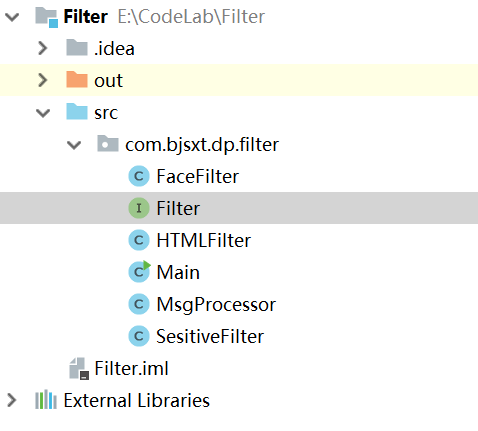
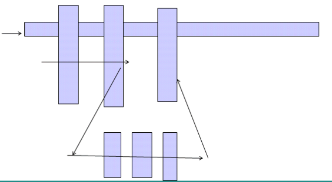
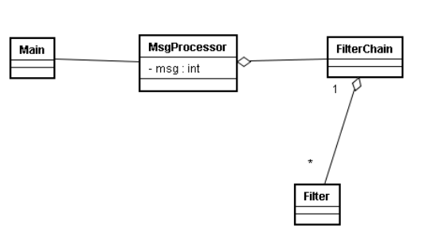
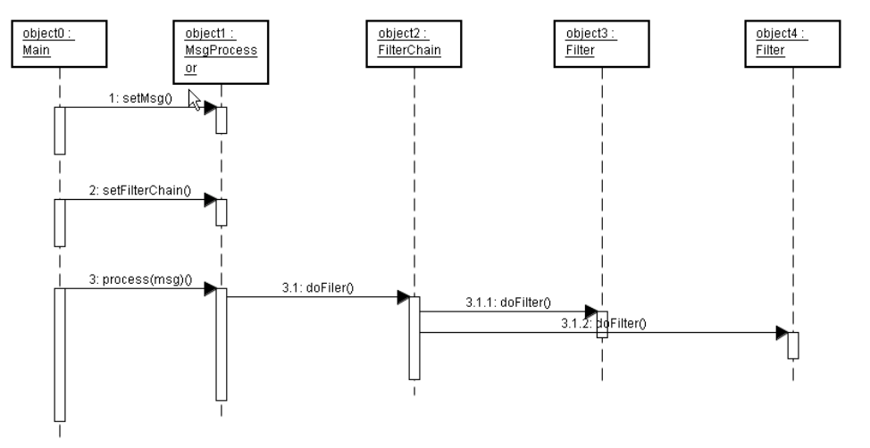
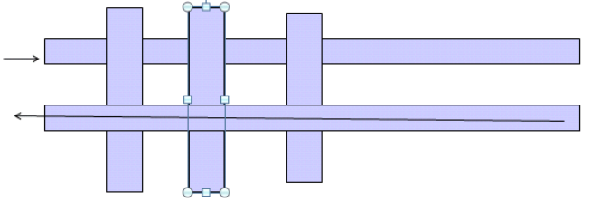
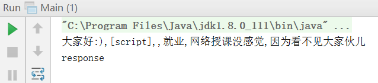
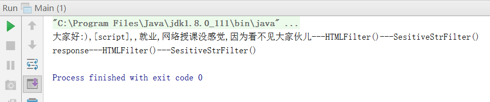
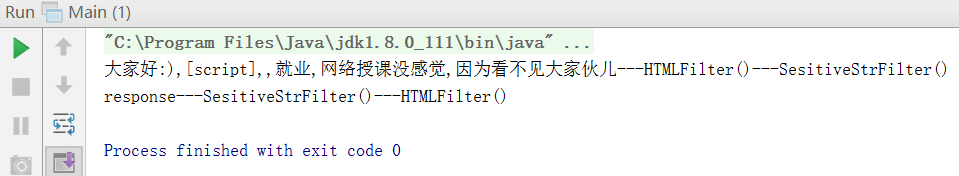

第一课
考虑一个场景：我们要做一个网站，客户端给服务器要发一些信息，服务器要对一些敏感信息进行过滤修改，最简单的办法就是写一个类，对客户端发来的字符串进行字符替换。代码如下：
Main.java:
|
|
第二课
重新对上面的代码进行设计，使我们的过滤器成为一个接口，需要制作一个新的过滤器规则时，就实现这个接口，然后在自己的代码里创建一个过滤器数组，需要什么规则就添加哪个过滤器即可。
看代码：

设计Filter的接口（Filter.java）:
|
|
设计一个HTMLFilter类，实现Filter，用来处理信息中包括的<>：
设计一个SesitiveFilter类，实现Filter，用来过滤敏感词汇：
|
|
设计一个FaceFilter类，实现Filter，用来将笑脸替换成我们想要的笑脸：
|
|
设计一个MsgProcessor类，创建一个Filter数组，用来将刚刚创建的一些过滤器都装入这个数组，然后对遍历数组，对我们的信息依次调用这些过滤器规则：
|
|
Main.java：
在考虑一个问题：
比如我们有了一组现成的过滤器规则，但是这时候想在中间插入一组其他过滤器规则，该怎么实现呢？

第三节
我们对上面的代码重新进行设计：
先创建一个FilterChain类，这个类的作用就是保存我们需要的过滤器，并且可以在执行过滤过程：
然后再重新设计MsgProcessor类，使其内部封装一个FilterChain，并且可以接受客户端传来的消息：
|
|
重新设计Main.java：
|
|
注意上面的FilterChain可以链式调用addFilter方法，这是由于addFilter返回了一个FilterChain本身的类。
上面代码的类结构图如下：

用序列图表示就是：

为了实现上一节可提出的，在过滤器链中插入一组过滤器，我们可以对前面的代码再次重新设计：
使FilterChain实现Filter接口：public class FilterChain implements Filter{…}
在Main中定义两个链，一个fc，一个fc2，两个都包含一组过滤器，那么由于fc和fc2实现了Filter，所以直接在fc中添加fc2就可以了：
现在可以说是基本有了责任链模式的意思了。
现在考虑一个问题，就是我们之前都是处理从客户端到服务端的消息，那么怎么样能处理从服务端到客户端的信息？就像下面图像表示的那样：

第四课
为了完成能同时对来回的消息都进行过滤处理，我们进行如下设计：
创建两个类，一个Request，一个Response：
Request.java:
Response.java:
重新设计Filter.java:
FilterChain要重新实现这个接口：
HTMLFilter.java：
|
|
SesitiveFilter.java：
|
|
把FaceFilter.java和MsgProcessor.java删掉，并修改Main.java:
运行发现，现在只有request消息被处理，response没有被处理：

为了使response也被处理，修改前面的代码，对response进行处理：
SesitiveFilter.java:
|
|
HTMLFilter.java:
|
|
运行效果：

发现顺序有问题，因为response的过滤器顺序应该反过来才对。
为了实现这个需求，我们重新设计Filter.java，使其参数中传入一个FilterChain：
FilterChain.java:
HTMLFilter.java:
SesitiveFilter.java:
|
|
Main.java:
运行结果：

发现成功实现了倒序！
这是怎么做到的？
发现在FilterChain中对request进行递归处理，就是使用完一个过滤器，马上又递归调用下一个过滤器。直到最后一个过滤器处理完request，才对response进行处理，处理完返回，就到了上一个过滤器的处理。所以整体就实现了一个堆栈的过程。
其实Java Web和Struts2的过滤器就是这么实现的。
那么如果我们在对request进行处理的时候，想要终止后续操作，该怎么做呢？
直接在处理时候不调下一个filter就可以了。